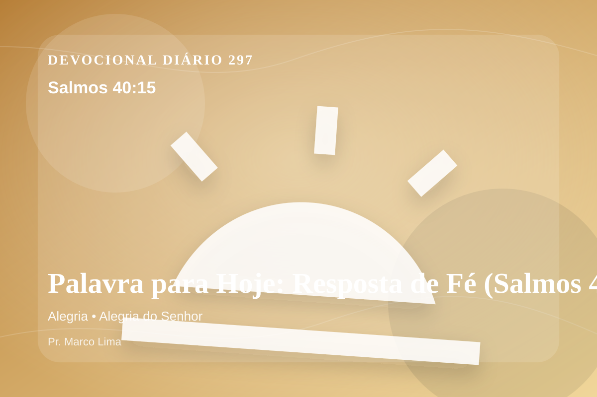

Palavra para Hoje: Resposta de Fé (Salmos 40:15)
Sejam eles assolados como pagamento de sua humilhação, os que dizem de mim: “Ha-ha!”
Pensamento
Desta vez, leia o texto pensando no que precisa ser entregue antes de qualquer mudança externa. Este devocional começa com uma pergunta simples: que área da sua vida precisa ser iluminada por Salmos 40:15 hoje?
Salmos 40:15 chama o coração a ouvir Deus com reverência e responder com fé prática. A Palavra não foi dada para enfeitar pensamentos religiosos, mas para conduzir pessoas reais ao Senhor.
O tema de alegria precisa ser recebido com simplicidade e seriedade. O ponto central não é apenas saber mais, mas viver de modo mais rendido. Este tema aponta para a maneira como Deus forma o coração do Seu povo por meio da Palavra. A aplicação correta não nasce de frases soltas, mas de uma leitura reverente, contextual e obediente do texto bíblico.
Examine se existe orgulho, comparação, medo, culpa escondida ou autossuficiência impedindo sua resposta ao Senhor. A graça não nos humilha para destruir; ela nos quebra para reconstruir em Cristo.
Arrependimento não é apenas sentir peso na consciência; é voltar-se para Deus, abandonar o caminho que entristece o Senhor e confiar que a graça de Cristo é suficiente para perdoar e transformar.
Este é o evangelho que sustenta toda aplicação: Jesus Cristo morreu pelos pecadores, ressuscitou em vitória e chama cada pessoa a responder com fé, arrependimento e uma vida rendida ao Seu senhorio.
Cristo não veio apenas melhorar comportamentos, mas salvar pessoas. Na cruz, Ele trata a culpa; na ressurreição, Ele abre caminho para uma nova vida.
Leve esta Palavra para o ponto mais concreto do seu dia. O fruto da meditação aparecerá quando Cristo governar uma reação, uma prioridade ou uma escolha.
Para Praticar Hoje
- Leia Salmos 40:15 lentamente e destaque uma palavra ou expressão central do texto.
- Confesse a Deus um pecado, resistência ou frieza espiritual que esta Palavra revelou.
- Declare sua fé em Jesus Cristo e pratique hoje uma atitude concreta de arrependimento e obediência.
Oração
Senhor, onde há tristeza que sufoca, traz a Tua alegria. Salmos 40:15 revela que a alegria cristã não é euforia, mas fruto do Espírito. Que eu aprenda a alegrar-me sempre, em tudo dando graças. Que eu caminhe contigo neste dia.
{kind=link}